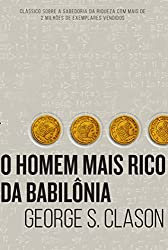

OS LIVROS MAIS LIDOS DE 2022
Escritoras dominam entre os livros mais vendidos em 2022
É ASSIM QUE ACABA- COLLEEN HOOVER

Em É assim que acaba, Colleen Hoover nos apresenta Lily, uma jovem que se mudou de uma cidadezinha do Maine para Boston, se formou em marketing e abriu a própria floricultura. E é em um dos terraços de Boston que ela conhece Ryle, um neurocirurgião confiante, teimoso e talvez até um pouco arrogante, com uma grande aversão a relacionamentos, mas que se sente muito atraído por ela. Quando os dois se apaixonam, Lily se vê no meio de um relacionamento turbulento que não é o que ela esperava. Mas será que ela conseguirá enxergar isso, por mais doloroso que seja? É assim que acaba é uma narrativa poderosa sobre a força necessária para fazer as escolhas certas nas situações mais difíceis. Considerada a obra mais pessoal de Hoover, o livro aborda sem medo alguns tabus da sociedade para explorar a complexidade das relações tóxicas, e como o amor e o abuso muitas vezes coexistem em uma confusão de sentimentos.
O HOMEM MAIS RICO DA BABILÔNIA - GEORGE S CLASON

É um clássico sobre como multiplicar riqueza e solucionar problemas financeiros. Baseando-se nos segredos de sucesso dos antigos babilônicos ― os habitantes da cidade mais rica e próspera de seu tempo ―, o autor mostra soluções ao mesmo tempo sábias e muito atuais para evitar a falta de dinheiro.
OS SETE MARIDOS DE EVELYNG HUGO - TAYLOR JENKINS REID

Lendária estrela de Hollywood, Evelyn Hugo sempre esteve sob os holofotes — seja estrelando uma produção vencedora do Oscar, protagonizando algum escândalo ou aparecendo com um novo marido… pela sétima vez. Agora, prestes a completar oitenta anos e reclusa em seu apartamento no Upper East Side, a famigerada atriz decide contar a própria história — ou sua “verdadeira história” —, mas com uma condição: que Monique Grant, jornalista iniciante e até então desconhecida, seja a entrevistadora. Ao embarcar nessa misteriosa empreitada, a jovem repórter começa a se dar conta de que nada é por acaso — e que suas trajetórias podem estar profunda e irreversivelmente conectadas.
TODAS AS SUAS (IM)PERFEIÇÕES - COLLEN HOOVER
perferções.jpg "TODAS AS SUAS (IM)PERFEIÇÕES")
Quando a dança começa, a sincronia é perfeita, os passos seguem o ritmo, as mãos não se soltam, os olhos jamais se deixam. Mas a música pode acabar a qualquer momento... É possível valsar no silêncio? Quinn e Graham se conhecem no pior dia de suas vidas; ela chega mais cedo de uma viagem para surpreender o noivo, ele testemunha a traição da namorada. E é assim que ambos acabam no corredor de um prédio, trocando confidências, biscoitos da sorte e palavras de conforto. Fim da dança... se o destino não tivesse outros planos para os dois.
A GAROTA DO LAGO - CHARLIE DONLEA

A história se passa em Summit Lake, uma pequena cidade entre montanhas. Um lugar bucólico e com encantadoras casas dispostas à beira de um longo trecho de água intocada. Duas semanas antes, a estudante de Direito Becca Eckersley foi brutalmente assassinada em uma dessas casas. Atraída instintivamente pela notícia, uma repórter vai até a cidade para investigar o caso.
MAIS ESPERTO QUE O DIABO: O MISTÉRIO REVELADO DA LIBERDADE E DO SUCESSO - NAPOLEON HILL

Escrito em 1938, após uma das maiores crises econômicas, e precedendo a Segunda Guerra Mundial, este livro é um manual para todas aquelas pessoas que desejam ser mais espertas que seus medos, problemas e limitações.
VERIITY - COLLEEN HOOVER

Neste livro, Colleen Hoover se afasta do estilo que a consagrou, os romances, para se aventurar em um suspense psicológico avassalador. Através de uma narrativa perturbadora e chocante, a obra explora o lado mais sombrio das relações humanas deixando uma surpresinha chocante no final.